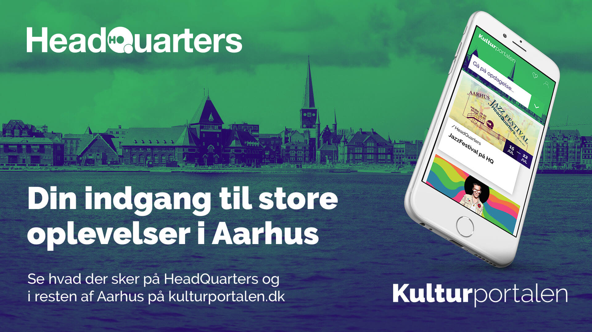

Kulturportalen

www.kulturportalen.dk
Stedet der samler kulturen
Hver eneste uge er der en utal af spændende arrangementer i Aarhus. Rundt omkring i byen findes nogle af landets absolut bedste teatre, museer og koncerthuse, som alle byder på spændende aktiviteter for hver en smag. Men nogle gange kan man hurtigt miste overblikket i havet af spændende kulturtilbud. Dét vil Kulturportalen lave om på.
For første gang nogensinde er Aarhus’ kulturinstitutioner gået sammen om at lave deres egen online platform, som kan give dig et overblik over byens sprudlende udvalg af arrangementer. En let måde, hvorpå du kan finde og planlægge ud fra, hvilke arrangementer der passer netop dig, afhængigt af din interesse og smag. Alt sammen hjemme fra din computer eller mobil.
Et utraditionelt samarbejde
I Aarhus er kulturinstitutionerne ikke konkurrenter, men derimod samarbejdspartnere om at gøre kulturlivet i byen til landets bedste – med store forestillinger, sensationelle arrangementer og unikke udstillinger af international kaliber. Her kan både nye og etablerede kulturgængere få et overblik over vivaret af oplevelser.
Kulturportalen får spinoff under Aarhus Kulturhovedstad 2017, men fortsætter herefter med at tilbyde et overblik over spændende, kulturelle oplevelser og højdepunkter for byens indbyggere og besøgende.
Har du input til Kulturportalen, er du velkommen til at tage fat i Aarhus Panorama, der står for driften af siden. Du kan ringe til dem på 8897 7070 eller sende en mail til hej@kulturportalen.dk.